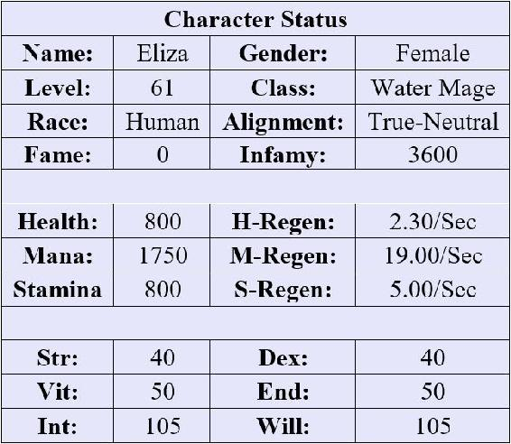
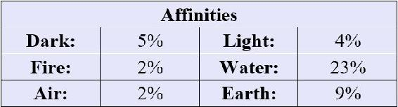

Eliza got home from school early the next day, having decided to ditch PE. She had little interest in wasting time walking around a track when she had work to do in-game. Throwing her bag on the kitchen counter, she took the stairs up to the second floor two at a time – making it to the top in record time. As she stepped into her room, the terminal on her desk flashed to life, a screen flickering into existence above the wooden tabletop.
Before she logged into the game, she wanted to check the forums. She quickly pulled up the homepage for Rogue-Net, a site that catered to AO – acting as a cross between a player trading house and a forum. The forums themselves had been subdivided by the discovered game regions and cities, and she scrolled immediately to Falcon’s Hook, her eyes skimming the posts. It didn’t take her long to find what she was looking for. In fact, it was the very first post on the regional forum, with over 300,000 views.
The post was titled “The Ice Witch.” The comments were rather enlightening, and Eliza still felt a chaotic mixture of pride and worry as she read through them. It had been a little scary to see so many people talking about her at first, but after several days without anyone catching onto her antics in-game, she had come to enjoy skimming the player feedback on her in-game exploits.
MonkeyKing: I died… again. What the hell is going on with these damned traps? At first, it felt like there were only a handful, but now they’re all over the forest west of Falcon’s Hook.
Legolass: The Witch strikes again... It’s not the ice spikes that are the problem. It’s the DOT with a 20-damage tick over 20 seconds. That’s just a death sentence unless you have a healing potion (which most people can’t afford at this point).
Kryptic: Even then, you better drink it fast… and avoid the next trap two feet away.
Chango: Are we even sure this is a player? This doesn’t seem possible. At this point, we know this is some variant of Cold Grasp, but how did they add the DOT? I personally think it’s some sort of NPC boss.
Caltrops: An NPC that no one has seen? Really? Maybe this is one of the stag’s abilities?
MonkeyKing: We had a full wipe because of this shit. Took us an hour to walk back and our bodies had already been picked clean. I don’t care who is doing this or how. They just need to die – painfully.
Eliza chuckled at a few of the comments. She had taken Evan’s advice to heart and had begun thinning out the players in the woods over the last few days by dramatically increasing the number of traps she laid in the forest. This was relatively easy since she spent most of the day harvesting ingredients while she set the traps, and then she used the evenings in-game to brew new poisons. She had also improved on her Wasting Poison, and the combination of her Cold Grasp spell and the poison was now usually enough to finish off anyone below level 40 unless they had immediate access to a healer.
However, she had been extremely careful not to reveal her identity – and she had continued delivering potions every so often for Alma to keep up appearances. She also didn’t always loot the corpses, hoping that the deceased would infer that other players were stumbling upon the bodies. In short, she did everything in her power to make people think that there really was some sort of ghost haunting the woods.
Eliza would have loved to see the looks on her classmates’ faces if they knew that their diminutive egghead – who was apparently also a lying, useless water mage – was secretly the infamous Ice Witch. The thought was tantalizing, but she had been careful not to say anything at school – instead, suffering through the boredom and her classmates’ comments in stony silence.
Smiling to herself, Eliza hopped up from her chair and donned her headgear. She then laid down on her bed and tapped at the side of the helmet. A moment later, she was inside of AO. Her character sat perched on a branch roughly a dozen feet above the ground. Eliza had taken the liberty of purchasing a thick cloak with her newfound loot and the dark green fabric helped to conceal her in the dense foliage of the forest.
First things first, she needed to check her progress. Eliza brought up her system UI and quickly checked her notifications.
| x22 Level Up! |
| You have (0) undistributed stat points. |
New Passive Skill: Climbing
After hours spent scurrying up trees to avoid your enemies, you’ve improved at this particular method of running away. Good for you!
Skill Level: Beginner Level 6
Effect: 6% increase to Strength and Dexterity when climbing.
New Passive Skill: Camouflage
Camouflage is the art of concealing things in plain sight. Sort of like an innocent potion-delivery maid who moonlights as a bloodthirsty sociopath – except more leaves and… well, whatever people typically use as camouflage.
Skill Level: Beginner Level 5
Effect: 5% increased chance to avoid Perception checks.
x5 Skill Rank Up: Cold Grasp
Skill Level: Intermediate Level 1
Effect 1: Increases radius by 11%
Effect 2: Increases damage by 1%
x5 Skill Rank Up: Poisons
Skill Level: Beginner Level 9
Effect: 9% chance to add a second random poison effect.
x1 Skill Rank Up: Herbalism
Skill Level: Intermediate Level 1
Effect 1: Allows the player to harvest more difficult or dangerous plants. 5.5% chance for double ingredients.
Effect 2: Low-level ingredients appear on the map and are highlighted.
x1 Skill Rank Up: Alchemy
Skill Level: Intermediate Level 3
Effect 1: Increases success chance of crafting potions and potion potency by 13%.
Effect 2: Reduces ingredient consumption by 3%.
She had made remarkable progress in just a few days. Her strategy of killing the other players was much more effective than attempting to hunt individual monsters or level solely by training her crafting. It also helped that her approach involved both combat and crafting, which allowed her to level even more quickly, by spending her evenings working on her Alchemy and Herbalism skills. She suspected that most players wasted the downtime during the evenings in-game when hunting became more difficult.
With a flick of her wrist, Eliza brought up her Character Status to review her progress.


She had been hoarding stat points until yesterday when she had finally decided to start allocating them. After some deliberation, she had decided to allocate points to her Intelligence and Willpower to increase her mana pool and the power of her spells. Then she had assigned points to the remaining stats on a roughly equal basis. She saw a lot of benefit from Strength and Dexterity as she tried to navigate the forest and climb trees to avoid other players.
If only my real body were this nimble, she thought as she balanced easily in the tree – not for the first time resenting her clumsiness in the world. It turned out that a little Dexterity fixed that problem in-game.
Her plan was also coming along well. She had significantly reduced the number of players that were entering the western forest. Most had moved to the north and south of town to avoid the traps – the damage and respawn time being too costly for most low-level players. As a result, she was now in a position to more safely hunt the Silver Stag – which she knew to frequent a lake near her current location. She had been back to the lake on several occasions to scout it out, as well as to check how many players were hanging around that area.
At that thought, Eliza began her descent from the tree. She dropped carefully to a lower branch, and her feet thudded against the forest floor a moment later, her cloak flapping around her. With a swift gesture, she brought up her map and shifted it to her peripheral vision. Dozens of blue circles were shown all around her as she made her way forward – each indicating the location of her traps.
She stopped occasionally to loot a corpse or to refresh a trap location, making a circuitous path among the blue circles on her map. As a result, it took her nearly an hour to make it to the familiar lake to the southwest of Falcon’s Hook. As she neared the shoreline, Eliza slowed and quickly climbed a nearby tree. She had learned to be careful and find a vantage point near the lake. Several other player groups had already figured out that the stag occasionally frequented this spot to drink.
As Eliza assumed a perch in a nearby tree, she pulled up her map again. The lake rested nearby, its placid water reflecting the sunlight. She couldn’t see anything out of the ordinary from her current location, but her map revealed that nearly every inch of the shoreline had been dotted with her traps. She had summoned the trap circles the evening before. She wasn’t taking any chances.
The only plan Eliza had for the day was to wait for the stag. It should be coming back soon. She had seen it three times already – each event spaced about two days apart. By her calculations, today should be the day that the creature returned to the lake.
Hopefully, this would also be its last visit.
Eliza sat in the tree for hours without any sign of movement, eventually opening the in-game console and scouring the net for any additional information regarding the creature. There was precious little available, and most players were cautious about posting anything since there was still a bounty on the stag’s head. Yet it never hurt to hunt for any possible advantage.
As she was finally starting to think about giving up for the day, Eliza detected a faint movement along the edge of the shore – just a slight tremble of a few leaves. It was more than she had seen in hours and her eyes trained on the spot, her breath catching hopefully.
Could this finally be it?
Slowly – to the point that it was almost painful – a single silver-furred hoof emerged from the brush. It was soon followed by the familiar body of the Silver Stag, its intricate horns jutting into the air. The creature seemed to be moving more cautiously than normal. Eliza could only assume that this meant that the players had become more daring over time. The deer sniffed at the air delicately and tilted its head from side to side as though scanning the area.
Seemingly convinced that there were no threats nearby, the creature took a few tentative steps toward the water. Eliza held her breath, her eyes darting to the map hovering in the air beside her. The stag was close to one of her traps – really, really close. If it took just one more step forward, she would finally have it.
Eliza’s hands clenched at her cloak, balling the fabric between her fingers. She silently prayed for the deer to take that one final step forward. Its hoof lifted from the ground as though in slow motion and moved forward at a snail’s pace. As her heart thumped in her chest, Eliza finally saw the stag’s hoof land in the center of her trap circle.
Shards of ice immediately speared upward, shattering the two vials that Eliza had carefully placed in each trap circle. The spears were stained a mottled green and yellow – Eliza not wanting to cut corners when she was this close to finally attaining her goal. The beast’s reflexes were amazing, and it nearly avoided the trap. However, an errant shard pierced the stag’s leg, bright red blood staining its silvery fur.
The beast let out a pained bleat, its leg trapped by the ice as the poisons swiftly entered its bloodstream. It smashed its antlers against the ice frantically, the bone tearing apart the spears quickly and finally freeing its leg. Then the Silver Stag tried to turn and run. It managed a single leap before faltering slightly, stumbling to the side off balance. It then took another wobbly step forward and sunk to its knees.
This was it. This was the moment that Eliza had been waiting for. She frantically dropped down from her perch, but as she reached the ground, she suddenly froze – the sound of voices drifting through the air.
“Look what we have here,” a male voice boomed across the shore. “Someone was nice enough to leave the stag just lying here.”
Eliza peeked out from behind the trunk of the tree, the bottom dropping out of her stomach as she saw a group of at least a dozen green-garbed players standing around the deer. The leader was familiar – she would remember that particular face anywhere. It was the same man that ordered her death a few days before. In fact, this entire situation gave her an eerie sense of déjà vu.
“After all this time, this seems a little anti-climactic,” the player drawled. “Though I’m not one to look a gift horse in the mouth. Or should I say a gift stag,” he added with a chuckle that was echoed by his crew. Without further ado, the player stabbed forward with his spear, neatly impaling the deer’s throat and a helpless gurgle erupted from the pinned and poisoned creature.
Eliza could only look on in horror, her mind wheeling. What was she going to do? After coming all this way, could she really just let these players walk off with the stag? But how could she take on so many at once? She was too far away to use Obscuring Mist, and the players had somehow managed to avoid her traps – perhaps catching on to her novice camouflage?
What am I going to do? That single question kept rebounding through her head. She just didn’t have an answer.